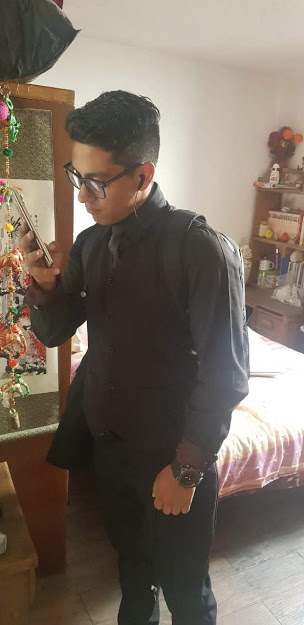

SOBRE MI
Mi nombre es Gerardo Jimenez Espinosa Nacido en el 2001 el 20 de Marzo tengo un hermano mas grande un padre el cual nos ha dado todo y una mdre muy estricta que admiro y respeto
Alos 5 años Entre en el presolar yeyetsi pero solo acudi hasta el tercer año, alos 6 años ingrese ala escuela primaria matilde acosta la cual me enseñaria muchas cosas conoci amuchos de mis compañeros que hou en dia se han convertido en mis socios con ellos tengo compartídos momentos muy importantes de mi infancia Mi mama Maria del rosario Espinosa cortéz fue parte de la mesa directiva de la escuela tenia una amiga con la cual me juntaba todos los dias realizamos muvhas travesuras y muchas tareas importantes que nos pedian en la escuela. A los 8 años me cambiaron de esuela ya que tenia problemas con mis compañeros al ser yo muy hiper activo saliendo de ahi mi mama decidio inscribirme en la escuela primaria britania en la cual conclui mis estudios anivel basico concociendo alas personas que hoy se endia se convertirian en mi socicos y mi novia pase los ultimos dos años con ellos pero ninguno de mis amigos se portaba como mi novia.
Por fin habia llegado el tiempo que siempre estuve esperando conclui mis estudios en la escuela primaria alos 12 años me sentia muy contento de pasar a secundaria pero cuando estuve sentado un 24 de junio en la banca de la escuela secundaria diurna 243 junto con Monica quien mas adelante se convertiria en mi novia me puse nervioso tanto que al momento de la aplicacion para el examen de ingreso tanto que el profesor que estaba inpartiendo dicho eamen me llevo con la directora excusando que mi actitud no era la optima para precentar el examen alo que mi mama acudio al llamado cuando mi madre realizo acto de precencia en este lugar le indicaron que podia realizar el examen aislado de los demas dado que mi comportamiento no era el optimo.
Cuando publicaron los resultados acudi ala institucion para visualisar mi resultado y para mi sorpresa si me quede en la institucion que abria sido una de las mejores etapas de mi vida el primer año conosi muchas personas entre ellas se encontraban mis mejores amigos y mi primera novia karen ella fue una parte muy linda en estre trancurso de mi vida ya que yo al ser un joven muy hiper activo me saltaba las calses y hacia mcuahs trabesuras amis profesores pero con el paso del tiempo me di cuenta que njo era lo mejor para mi asi que decidi realizar con mas empeño mis trabajos y empezar a poner la atencion necesaria em mis estudios ese mismo año me corte ls llema del dedo indice izquierdo en mi taller de carpinteria me asuste mucho al ver que mi mano estaba completamente ensangrentada asi que lo priero que hicieron mis amigos fue abizarle al profesor que se encontraba en esos momento y el profesor asu vez aviso ala directora y me llevaron ala enfermeria alli una enfermera me envolvio mi dedo con una cebolla y muchas gasas al poco rato llego mi mama muy preocupada la cual me llevo al hospital y en el hospital me pusieron una pomada y me dijeron que la erida no era tan grande asi que solo me hicieron una curacion y mi mama tenia que estar labando mi mano.
Al año siguiente en segundo de secundaria di por concluida mi relacion con karen ya era un chico mas tranquilo aun que aun me gustaban mucho los deportes asi que empeze a paracticar mas sobre futbol juba en los recesos de las clases y en nufue ahi cuando el profesor de educación ficica noto mi potencial y me mando llamar par que realizaramos una pruebas y saber si me podia ganar una beca en la unversidad anahuac del norte en esas puebras di lo mejor de mi asi que unos dias des pues el profesor me volvio a llamar y efecctivamente me quede pero meses despues perderia la beca ya que era muy pesado mantener un promedio de exelencia y acudir alos entrenamientos.
Entercer año de la secundaria no pasaron cosas tan relevantes en mi vida lo mas relevante de ese año fue que comenso mi amor por los video juegos mi padre me regalo mi primer xonsola la xbox 360 donde meconverti en un gamer total y fue asi como descubri el mejor juego de todos el gears of war.
Años despues Al ingresar al colegio de bachilleres plantel 4 en mi primer año fue cuando le declare ami actual novia monica la cual me apoyaria para mis futuro proyectos tambien conoci ami mejor amigo edgar islas con el cual creariamos la empresa ike asistencia la cual fue basada en un servicio de asistencia vial ya que todo deribo de un accidente que yo sufri en mi motocicleta ya que en una carambola un auto golpeo la parte trasera de ella y fue ahi cuando ya no pude tomar el control de ella y sali volando lo que paso despues fue que me levante y realice una auto evaluacion asi que al momento de evaluar mi mano se sintio ensegundos la deformidad estaba completamente rota partida en dos asi que me levante y camie hacia el hospital que se encontraba a algunos pasos y ahi me acomodaron mi manofue el peor dolor que e sentido justo despues pude marcarle ami papa el cual medjio que ya estaba enterado y que iba de camino me operaron 2 veces de la mano y esa es la historia del por que mi amigo y yo decidimos crear este servicio de asistencia ya que yo no pude tener el mismo servicio que ahora tienen otras personas.